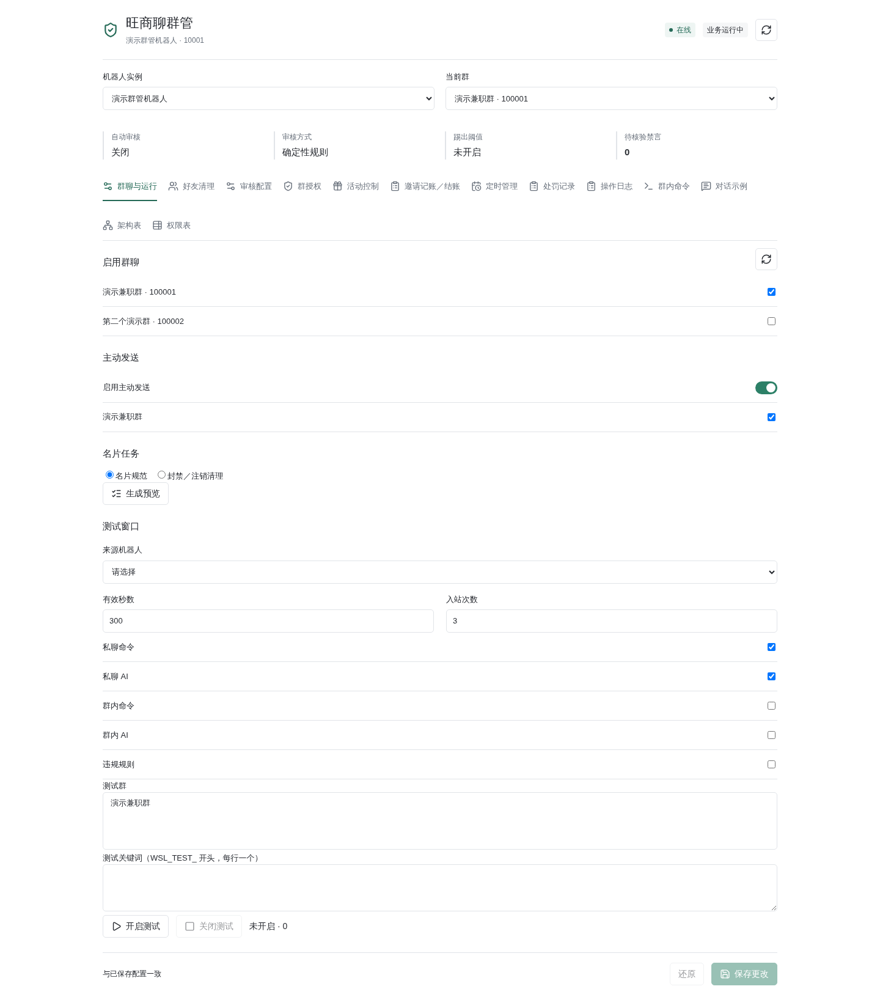
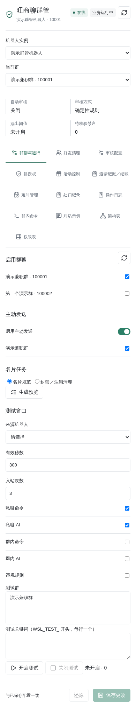

Flood fallback counts fresh unique messages per account, group and sender, including ordinary group commands: three messages in five seconds, eight in ten seconds, or five identical texts in thirty seconds trigger review and enforcement independently of the model. Progressive enforcement first allows three successful recall-only actions, then recall plus 5/15/60-minute mutes. The recall grace persists across restarts; failed or unknown recalls do not consume it. Existing mute history is retained.
Updated 2026-10-20. The 2026-10-07 migration build and 2026-10-08 deployment are
historical milestones. The public bot now runs inside shared AstrBot; the cashier
service remains independent. Do not restore astrbot-open.service or its public
control.sock. The dedicated cashier.sock still bridges restricted writes and
diagnostics. Deployment or passing code tests is not full live acceptance.
Subsequent October 20 live warning checks passed only three cases in 1459282 across two isolated fixtures of one and two, not complete escalation, fresh activation, finance or phone acceptance; see scoped evidence. The current redundancy cleanup only consolidates equivalent reply calls and keyword validation and removes an unused old avatar-pricing migration function. It executes no migration, cleans no database, changes no historical finance row, reloads/restarts no backend and sends no messages.
| Previous bot-page control | Migration entry |
|---|---|
| Login, verification, start/stop, logout, connection | Remains on the bot page |
| Enabled groups and proactive destinations | Plugin management → Groups → Activation & Rules; Groups & Runtime is a compatibility page |
| Card previews, execution, manual account cleanup, progress | Compatibility Groups & Runtime → Card tasks; that tab is hidden in integrated mode, with no equivalent visible entry established here |
| Bounded test windows | Compatibility Groups & Runtime → Test window; protected APIs remain, which does not make the old panel visible |
| Group grants, card suffix and automatic normalization | Groups → Activation & Rules / Group Grants, subject to actual capability and native role |
| Reply and AI/moderation settings | AI → Customer Service / Group AI / Model & Budget; the old Moderation tab is hidden in integrated mode |
| Policy revisions and failures | Runtime & Logs → Operation Logs / Management Audit |
| Automatic friend approval and reconciliation | Groups → Friend Requests; no friend deletion |
| Administrators, providers, personas, knowledge bases | Existing AstrBot configuration |
| Manual cash payments, Access protection and contact text | Independent cashier page |
Online transport and active business are distinct states. Saving business settings does not terminate or reload the adapter. Group-selection changes refresh the directory without logging in again. Do not claim a complete group directory when upstream pagination is unverified.
App.vue hides the business/settings tabs in integrated mode, while card tasks
and the old test-window panel remain in BusinessControls.vue. This is a
source-confirmed navigation gap, not a browser acceptance result. Do not restore
retired isolated mode or relax API permissions to expose it. These historical
offline fixtures are not screenshots of current integrated navigation:


The account-bound policy store is
data/plugin_data/wangshangliao_moderation/settings.sqlite3.
It stores base-policy revisions, effective times and change history. Public tenants,
grants, group AI and quotas live in wangshangliao_open/open-service.sqlite3 and
overlay that snapshot at runtime. Old instance policies must not overwrite tenant rules.
Web controls and authorized fixed commands use their respective versioned writers.
Public conversational AI has no configuration or management write tools; the old
administrator-AI writer description is historical. Activity, cash and execution ledgers
stay at their original paths. Missing migrated policies fail closed, never import empty defaults.
Legacy requests cannot combine transport changes and business edits.
Disabling the plugin revokes the runtime generation, test windows and queued replies, but does not log out the account. Delayed events cannot send or use management tools. Cold starts quarantine old pending chat commands, preserving invitation notices separately. Read-only restoration of observation groups cannot activate business execution.
Only currently authorized fixed private management commands can preview and confirm
changes. AI explains commands but cannot execute them. Private consultation requires
/chat. Group mentions, including administrator mentions, require per-group opt-in
and, like autonomous replies and idle topics, resolve
profiles.resolve("group", account, group), never private consultation.
They share the group persona, with account/group overrides, but verified members'
mention histories remain independent and bounded by the configured turns.
Other members, groups, accounts, private chats and old group-consultation history
are never mixed, migrated or reused. Autonomous candidate buffers and the original
/group origin remain unchanged. All group output is plain text without
【群聊AI】 or 【客服咨询】 prefixes; private read-only AI is unchanged.
mentions remains independent of autonomous. Ordinary chat reaches bounded, filtered
model context only when autonomous conversation is separately enabled; idle speech is
another switch. Budget, payer confirmation, current permissions, quotas and hours apply.
Existing AstrBot identity, profile, persona and knowledge-base systems remain authoritative.
Pausing, disconnecting or failing to read a directory does not prove departure. Verified departure and a durable generation drive exact-group working-data cleanup, retaining finance and uncertain-action evidence. Cleanup commits per database, not as a cross-database atomic transaction.
Friend reads have a minimum three-second interval and approvals a minimum thirty-second interval, alongside scan periods and durable read backoff. Unknown approvals require Dashboard readback; toggles do not clear holds. First-use guidance is durably claimed before delivery, and uncertain sends are not replayed. Welcome delivery uses fixed reviewed native artwork without automatic uploads. Never restore friend deletion.
Run in a controlled maintenance window with business writes stopped:
PYTHONPATH=. .venv/bin/python scripts/wsl_policy_migrate.py backup \
--data /opt/astrbot-prod/data --output /secure-backups/wsl-before-migration
PYTHONPATH=. .venv/bin/python scripts/wsl_policy_migrate.py export \
--data /opt/astrbot-prod/data --output /secure-backups/wsl-latest-config.json
Both destinations must be new. Backups include SQLite integrity checks, SHA-256 manifests,
core configuration and sealed credentials. Keep these private. Individual online SQLite
backups are not a cross-database atomic snapshot; stop writes for cutover consistency.
Coordinate both shared AstrBot and the independent cashier. Verify that the manifest
includes native storage and centralized wangshangliao_moderation,
wangshangliao_open and wangshangliao_cashback data, account-directory bindings,
friend approvals, onboarding claims, model settings and Access side files.
Business directories are account-bound; sealed sessions remain instance-bound and
may be elsewhere. The older wangshangliao_maintenance.py backup omits centralized
business stores and is not a complete integrated backup. Back up global personas,
knowledge bases and AstrBot conversations separately.
Rollback export uses the latest account-matched policies, never restores financial ledgers
and never overwrites live files. Do not replace post-migration payment history with old backups.
Export covers base policies, not conversion of public tenants, group AI, plans,
budgets or scoped knowledge. A successful export does not prove a lossless downgrade.
Do not restore the retired public socket or AI write tools during rollback.
Deleting a bot does not delete the independent cashback ledger, but the ledger still
belongs to the retired collector. Do not just overwrite its instance ID. Back up and stop
writes before an administrator calls migration.migrate_cashback_collector; it is not
exposed to chat, AI tools or cashiers. Require positive target membership and a complete
roster fetched within five minutes. Stale group versions, bindings or conflicting member
identities reject the entire transaction.
Existing entry IDs, inviter attribution, amounts, payment registration and historical
prices remain intact. Evidence retains its original collecting account; group- and
target-account-scoped collector_migrations authorize only pre-cutoff history. Subsequent
transfers cannot extend earlier cutoffs. Newly baselined roster members are ineligible,
with zero reward. Restarting preserves cashier-confirmed manual agent prices.
Set the shared access.json collector_id and select the group in the target bot's business
policy without copying sanction permissions. A fresh real roster/source scan is required
before settlement. Existing safety rules restart the three-hour qualification after an
observation gap over two minutes. Paid entries remain paid; confirmed departed unpaid
members become void. Retain other groups' history without granting access when target
membership is unconfirmed.
An administrator can explicitly recover outage newcomers mistakenly inserted as migration
baselines using the internal recover_cashback_migration_entries maintenance function.
It is not exposed to web, chat or AI tools. Preview and back up first. Require exact entry
versions, untouched zero-value baselines from the recorded migration, a fresh complete roster,
one approved invitation, matching identities and a recorded price. Reject departed, paid,
ambiguous or previously handled entries. Commit atomically with per-entry audits. Never infer
arrival time from application time; restart three-hour qualification rather than making the
records immediately payable.
For a conflicted historical payment with an unproved join-operator attribution, the internal
detach_unverified_paid_inviters function clears only the unproved invitation fields.
Payment state, amount, registration and the historical recipient audit remain intact.
The portal groups these as paid entries awaiting attribution review, not as that person's
invitations. An invitation after payment for a later rejoin cannot reassign the earlier
payment or earn a second reward.
Cash reward rules now retain group-scoped versions and effective times. Delayed reliable invitation evidence predating the current price must match a recorded enabled rule and collector identity before using that historical price. Missing legacy history is not reconstructed from today's price. Registered payment amounts remain immutable; conflicting late evidence is flagged for review with an audit entry.
The current-group selector displays the directory name with its ID for disambiguation. Missing cached names are fetched from the logged-in account's group list. Isolated service-chain tests cover suspended evidence recovery, historical pricing, collector changes, stale collector rejection, rejoin invalidation and rollback when suspended before transaction completion. Mock platform interfaces and temporary databases do not substitute for live platform delivery acceptance.
Before production cutover, validate import retries, stale revisions, identity isolation, revocation, mobile/desktop controls and no-reconnect saves. Also validate invitations spanning suspension, event-time price snapshots and collector changes. Missing attribution/time/price evidence must stay pending review. Offline tests do not replace these release gates. Do not test by paying real entries or mass-sanctioning production members.
Deployment was requested and performed on 2026-10-08. See the acceptance record for completed checks and remaining live-platform coverage. Deployment success does not imply full live acceptance.
The read-only 2026-10-20 evidence is
/opt/backups/wsl-group-ai-20261020-format/runtime.json: one selected group had
mentions and autonomous conversation enabled, idle speech disabled and readiness
clear; a post-fix autonomous send was accepted, with two native conversation
messages and 1421 tokens recorded. This does not prove every group is enabled or
that phone display was confirmed.
/opt/backups/wsl-ai-enable-20261020T0724Z/enable.json records hard-budget
confirmation, a 1000 USD supplier limit and a 20 USD application monthly budget.
Its enable script made zero model calls and did not test supplier exhaustion.
These are timestamped snapshots, not live checks performed by this documentation pass.
This pass only read source/evidence, exercised isolated functions with in-memory
mocks and edited documentation; no network, database/configuration writes or service
restarts occurred. The full suite and mixed-load acceptance were not rerun.